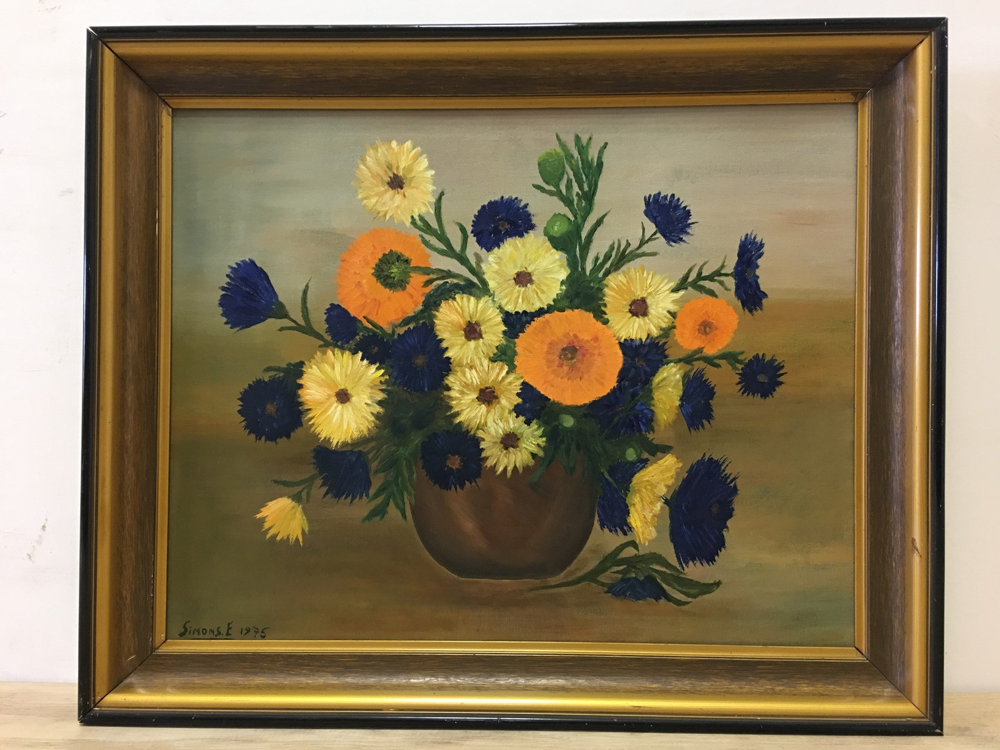
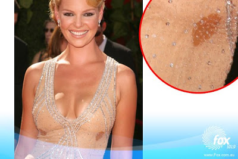

Kailiniai Moterims: Audines Kailiniai ir Kailinukai Pigiau

Kailiniai Linas Aksesuarai Apie mus Kontaktai Privatumo politika Kailiniai Linas Aksesuarai Apie mus Kontaktai Privatumo politika Išskirtinio dizaino Lietuvoje pagaminti
kailiniai ir aksesuarai Vasariška ir gaivinanti
apranga moterims iš
100% lino
Juodsidabrės lapės kailinukai
1,100.00 € Į krepšelįIlgi avikailio kailiniai su kapišonu
1,150.00 € Į krepšelįBebriniai kailinukai
1,100.00 € Į krepšelįAvikailio kailiniai su stačia apykakle
570.00 € Į krepšelįAudinės puskailiniai
2,100.00 € Į krepšelįAudinės kailinukai
2,200.00 € Į krepšelį El. paštas: [email protected]
Tel: +37068672259
Darbo laikas:
I–V 10:00-17:00
VI 09:00 – 16:00
VII 09:00 – 14:00
Siekiant užtikrinti geresnę naršymo patirtį tinklalapyje yra naudojami slapukai (en. cookies). Jūs galite sužinoti daugiau informacijos, kurie slapukai yra naudojama arba kaip juos išjungti šioje nuorodoje settings .
Sutinku Close GDPR Cookie Settings Privatumo politika Privalomi slapukai svetainėje Trečios šalies slapukai Powered by GDPR Cookie Compliance Privatumo politikaTaisyklės paskutinį kartą atnaujintos 2018 spalio 1 d.
Sąvokos
1.1. Administratorius – Kailinas.lt rinkodaros skyriaus darbuotojas.
1.2. Asmens duomenys – bet kuri informacija, susijusi su fiziniu asmeniu – duomenų subjektu, kurio tapatybė yra žinoma arba gali būti tiesiogiai ar netiesiogiai nustatyta pasinaudojant tokiais duomenimis kaip el.paštas, vienas arba keli asmeniui būdingi fizinio, fiziologinio, psichologinio, ekonominio, kultūrinio ar socialinio pobūdžio požymiai.
1.3. Asmens duomenų valdytojas – Kailinas.lt
1.4. Paskyra – tai prisijungimo prie Kailinas.lt sąskaita, kuri sukuriama aktyviais Pirkėjo veiksmais pagal nurodytą veiksmų seką Kailinas.lt svetainėje ir kurioje yra saugomi Pirkėjo asmeniniai duomenys bei užsakymų istorija.
1.5. Paslaugos – visos Kailinas.lt Pirkėjui teikiamos paslaugos, įskaitant, bet neapsiribojant, prekių, esančių Kailinas.lt, pardavimą.
1.6. Pirkėjas – tai: (i) veiksnus pilnametis asmuo; (ii) juridiniai asmenys.
1.7. Slaptažodis – tai raidžių ir/ar skaičių kombinacija, sukurta ir naudojama Pirkėjo, siekiant registruotis Kailinas.lt sistemoje bei savo Paskyroje.
1.8. Slapukas – tai mažas tekstinis failas, siunčiamas į kiekvieno asmens, besilankančio Kailinas.lt, įrenginį, iš kurio yra prisijungiama prie Kailinas.lt ir laikinai tame įrenginyje išsaugomas.
1.9. Taisyklės – tai prekių pirkimo – pardavimo Kailinas.lt taisyklės.
1.10. Tiesioginė rinkodara – veikla, skirta paštu, telefonu arba kitokiu tiesioginiu būdu siūlyti asmenims prekes ar paslaugas ir (arba) teirautis jų nuomonės dėl siūlomų prekių ar paslaugų.
1.11. Kailinas.lt partneris – tai asmuo, tiekiantis prekes ar paslaugas Kailinas.lt; su kuriuo gali būti vykdomos bendros akcijos arba projektai.
1.12. Kailinas.lt paskyros – tai Kailinas.lt paskyros įvairiuose socialiniuose tinkluose (Pvz., Facebook), kuriose Kailinas.lt aktyviai bendrauja su savo esamais ir/ar potencialiais pirkėjais.
1.13. Messenger – komunikacijos su klientais ir rinkodaros įrankis.
Bendrosios Kailinas.lt privatumo politikos nuostatos
2.1. Asmenys, norintys įsigyti prekių ir/ar paslaugų, ir/ar sukurti paskyrą Kailinas.lt, privalo pateikti šiuos duomenis: vardą, pavardę, telefono numerį, elektroninio pašto adresą, ir gyvenamosios vietos ir/arba prekės pristatymo vietos adresą. Pirkėjas laikomas atsakingu dėl pateiktų duomenų teisingumo.
2.2. Pateikdamas užsakymą Pirkėjas sutinka, kad jo pateikti asmens duomenys būtų tvarkomi užsakymo vykdymo tikslais. Pirkėjas taip pat sutinka, kad Pirkėjo nurodytu el. pašto adresu būtų siunčiami informaciniai pranešimai, būtini prekių užsakymui įvykdyti.
2.3 Pirkėjo asmens duomenys gali būti tvarkomi rinkodaros tikslais tik tuo atveju, kai Pirkėjas pats išreiškia sutikimą pildydamas registracijos formą.
2.4. Pirkėjas gali bet kuriuo metu keisti ir/ar pildyti savo Asmens duomenis prisijungęs prie sukurtos Paskyros Kailinas.lt bei kreiptis į Kailinas.lt el. paštu [email protected] dėl pagalbos keičiant duomenis bei norint atsisakyti Paskyros.
2.5. Jei Pirkėjas po prekių ir/ar paslaugų įsigijimo iš Kailinas.lt nepageidauja, kad pateikti Asmens duomenys būtų naudojami Tiesioginės rinkodaros tikslais ar nori pašalinti vartotoją. Pirkėjas turi prisijungti prie savo Paskyros, esančios Kailinas.lt ir Paskyros lange „Mano vartotojas“, skyriuje „Vartotojo informacija“, spustelėti ant teiginio „Ištrinti paskyrą“. Taip pat visais atvejais Pirkėjas gali rašyti elektroninį laišką adresu [email protected] arba skambinti bendruoju Kailinas.lt klientų konsultavimo telefonu +370 68672259 ir nurodyti, kad nepageidauja gauti elektroninių laiškų ir/arba SMS žinučių. Elektroninių laiškų ir/arba SMS žinučių siuntimas nutraukiamas tik Pirkėjo aiškiai išvardintais el. pašto adresais ir/arba telefono numeriais. Pirkėjas gali atsisakyti naujienlaiškio ir paspausdamas nuorodą „atsisakyti“ arba „unsubscribe“
naujienlaiškio apačioje
2.6. Pardavėjas įsipareigoja neatskleisti Pirkėjo asmens duomenų tretiesiems asmenims, išskyrus kai to reikalauja kompetentinga Valstybės institucija LR įstatymų numatytais atvejais arba atskiru rašytiniu Pirkėjo sutikimu.
2.7. Kailinas.lt patvirtina, jog Pirkėjo nurodyti Asmens duomenys bus tvarkomi tik siekiant tinkamai suteikti Pirkėjams elektroninėje parduotuvėje Kailinas.lt teikiamas paslaugas (įskaitant teisę dalyvauti akcijose, projektuose). Kailinas.lt taip pat patvirtina, jog Pirkėjo nurodyti Asmens duomenys bus tvarkomi Kailinas.lt veiklos analizės ir Tiesioginės rinkodaros tikslais, jeigu tokį sutikimą Pirkėjas suteiks ir nepanaikins.
2.8. Kailinas.lt įsipareigoja neatskleisti Pirkėjo Asmens duomenų tretiesiems asmenims, išskyrus esant Pirkėjo sutikimui, vykdant užsakymą per Kailinas.lt partnerius bei Lietuvos Respublikos teisės aktų nustatyta tvarka.
2.9. Pirkėjas turi teisę: (i) pateikęs užklausą Kailinas.lt raštu, susipažinti su Kailinas.lt turimais savo Asmens
duomenimis bei gauti informaciją, iš kokių šaltinių ir kokie jo Asmens duomenys surinkti, kokiu tikslu jie tvarkomi, kokiems duomenų gavėjams teikiami ir buvo teikti bent per paskutinius 1 (vienerius) metus; (ii) pateikti prašymą Kailinas.lt raštu, elektroniniu paštu [email protected] , dėl Paskyros
ištrynimo arba Asmens duomenų valdymo veiksmų sustabdymo, kai tai daroma nesilaikant teisės aktų nuostatų, išskyrus Privatumo politikoje numatytus atvejus; (iii) nesutikti su Privatumo politika bei Pirkėjo Asmens duomenų disponavimu šioje Privatumo Politikoje nurodyta tvarka - tokiu atveju Pirkėjas neturės galimybės įsigyti prekių ir/ar paslaugų elektroninėje parduotuvėje kailinas.lt; (iv) atlikti kitus veiksmus, numatytus Privatumo politikoje bei teisės aktuose.
2.10. 2.9 p. išvardintais atitinkamais atvejais Kailinas.lt ne vėliau kaip per 30 (trisdešimt) dienų Pirkėjui pateikia
atsakymą bei atlieka pateiktame prašyme nurodytus veiksmus arba atsisako juos atlikti.
2.11. Prekių atsiėmimo metu pareikalautas pateikti Pirkėjo asmens tapatybę patvirtinantis dokumentas ir jame esantys Pirkėjo duomenys naudojami tik asmens tapatybės identifikavimui.
2.12. Pirkėjas, sutikdamas su šia Privatumo politika, sutinka, kad jo Asmens duomenys būtų naudojami siekiant įvykdyti jo užsakymą, nepriklausomai nuo to, ar užsako prekes ir/ar paslaugas iš Kailinas.lt kaip pardavėjo ar iš Partnerių, taip pat sutinka, kad jo Asmens duomenys gali būti perduoti Kailinas.lt Partneriams.
2.13. Pirkėjo Asmens duomenys teikiami į Europos Sąjungos valstybes nares ar į kitas užsienio valstybes tokiomis pat sąlygomis ir tvarka, kaip ir Lietuvos Respublikoje esantiems subjektams ir tik tikslams numatytiems šioje Privatumo politikoje.
2.14. Kailinas.lt Asmens duomenis saugo tiek, kiek šis asmuo naudojasi Kailinas.lt paslaugomis, išskyrus atvejus, nurodytus šioje Privatumo politikoje.
2.15. Po Paskyros panaikinimo Pirkėjo Asmens duomenys gali būti saugomi Asmens duomenų valdytojo serveryje iki šešių mėnesių, išskyrus atvejus, kai Pirkėjo pateiktais duomenimis buvo (i) pasinaudota vykdant neteisėtą veiką ar (ii) įtariama, jog įvykdyta tapatybės vagystė ar kitas pažeidimas, dėl kurio buvo ar bus atliekamas atitinkamų teisėsaugos institucijų tyrimas, (iii) jeigu Kailinas.lt yra gavęs skundų, susijusių su atitinkamu Pirkėju, ar jeigu Kailinas.lt yra pastebėjęs atitinkamo Pirkėjo padarytus Kailinas.lt pirkimo-pardavimo taisyklių pažeidimus; ar (iv) esant kitiems teisėtiems tikslams saugoti Asmens duomenis. Šie duomenys sunaikinami gavus teisėtus teisėsaugos ar kitų įgaliotų institucijų nurodymus.
2.16. Kailinas.lt vidiniai technologiniai sprendimai užtikrina, jog Pirkėjo pateikiami Asmens duomenys Kailinas.lt būtų apsaugoti nuo bet kokių neteisėtų veiksmų, praradimo, neleistino naudojimo ir pakeitimų, t. y., asmens duomenų apsaugos lygis atitinka Lietuvos Respublikos teisės aktų reikalavimus.
2.17. Pirkėjas įsipareigoja ir privalo saugoti savo prisijungimo prie Kailinas.lt Slaptažodį ir prisijungimo vardą, bei kitus duomenis. Pirkėjas įsipareigoja ir privalo jokiems kitiems tretiesiems asmenims neatskleisti Asmens duomenų nei apie save, nei apie trečiuosius asmenis, jeigu tokie trečiųjų asmenų Asmens duomenys jam tapo prieinami, ir iš karto apie matomus pažeidimus informuoti Kailinas.lt.
2.18. Esant arba diagnozuojant galimus sutrikimus Kailinas.lt, Administratorius gali naudoti Pirkėjų IP adresus.
2.19. Jeigu Kailinas.lt abejoja Pirkėjo pateiktų Asmens duomenų teisingumu, jis gali sustabdyti šių Pirkėjų Asmens duomenų tvarkymo veiksmus, šiuos duomenis patikrinti ir patikslinti. Tokie Asmens duomenys naudojami tik jų teisingumui patikrinti.
2.20. Siekiant, kad Pirkėjui būtų suteiktos elektroninės parduotuvės Kailinas.lt paslaugos visa apimtimi, į Pirkėjo įrenginį, kuriuo jungiamasi prie Kailinas.lt, gali būti įrašyti Slapukai.
2.21. Pirkėjas, patvirtindamas Privatumo politiką, sutinka, kad jo įrenginyje būtų įrašomi šioje Privatumo politikoje numatyti Slapukai. Šį sutikimą Pirkėjas gali bet kada atšaukti, pakeisdamas savo interneto naršyklės nustatymus, tačiau tokiu atveju tam tikros internetinės parduotuvės Kailinas.lt funkcijos jam gali neveikti.
2.22. Kailinas.lt naudojami Slapukai skirti informacijai perduoti elektroninių ryšių tinklu. Naršyklės nustatymais jūs galite ištrinti arba blokuoti visus šiuos Slapukus arba jų dalį, bet tokiu atveju dalis Kailinas.lt svetainės funkcijų gali neveikti. Kita Slapukų rūšis – skirta rinkti informaciją lankomumui apskaičiuoti (rinkti statistinę informaciją), pateikti Pirkėjų interesus atitinkantį turinį ir išsaugoti lankymosi istoriją. Kailinas.lt nenaudoja šios rūšies Slapukų, tačiau atkreipia Pirkėjų dėmesį, kad kai kurie Kailinas.lt Partneriai gali naudoti šios rūšies Slapukus, todėl Pirkėjas įtardamas, kad be jo sutikimo šios rūšies Slapukai yra naudojami, turėtų kreiptis į konkretų Kailinas.lt Partnerį.
2.23. Pardavėjas pasilieka teisę bet kuriuo metu pakeisti, pataisyti ar papildyti Taisykles. Apie bet kokius pakeitimus, pataisymus ar papildymus prisiregistravę Pirkėjai bus informuojami prisijungimo Kailinas.lt puslapyje metu ir privalės iš naujo patvirtinti Taisykles.
2.24. Bet kuriuo metu galite atsisakyti savo Messenger prenumeratos, įvesdami raktažodį "Stop" programėlės viduje arba "Atsisakyti prenumeratos" apatiniame meniu. Jūsų bus paprašyta, kad jūsų prenumerata būtų nutraukta.
Kailinas.lt kontroliuoja prenueratorių duomenis per trečios šalies programinę įrangą. Atsisakius prenumeratos, jūs visiškai atsisakysite visų pranešimų. Jūsų duomenys bus automatiškai anuliuoti po prenumeratos atsisakymo.
Slapukų nustatymai turėtų būti įjungti visada, jog mes galėtume išsaugoti jūsų pasirinkimus bei kitą kartą prisijungus nereikėtų to daryti iš naujo.
Enable or Disable CookiesIf you disable this cookie, we will not be able to save your preferences. This means that every time you visit this website you will need to enable or disable cookies again.
Trečios šalies slapukaiŠis tinklapis naudoja Google Analytics rinkti svetainės vartotojų informaciją, tokią kaip lankytojų kiekį, populiariausius puslapius, elgsena juose.
Šis slapuko įjungimas padeda mums tobulinti svetainę.
Enable or Disable CookiesPlease enable Strictly Necessary Cookies first so that we can save your preferences!
Enable All Save Settings